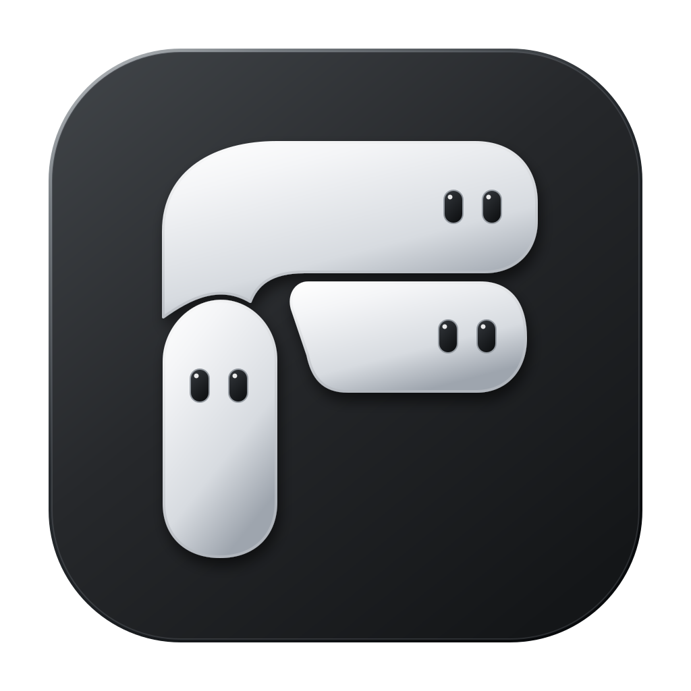

People-shaped collaboration.
Create persistent AI members with distinct responsibilities. Keep a private conversation, or bring members together in a group and mention who you need.

FormaBotPREVIEWMeet your AI teammates. Give them a task.
Bring the work home — as files you can use.
A little less busywork.
A little more room to create.
Create persistent AI members with distinct responsibilities. Keep a private conversation, or bring members together in a group and mention who you need.
Work with local files, commands, and browser tools in an authorized workspace. Follow execution progress from the conversation.
Open delivered files from the conversation, inspect previews and revisit delivery history. Your project folder is where the output belongs.
Download the Apple Silicon Mac build. Read the release notes and checksum information. The preview is unsigned and not notarized.
Choose a supported provider and model in Settings, then add your API key. Cloud model usage may incur provider charges.
Select and authorize a workspace, create a member, and start with a small task. Inspect the result in the conversation and your local folder.
Execution and file delivery happen on your computer. Relevant task context is sent to your selected cloud model provider. Local execution does not mean offline inference. Tasks require the App to be running.
This is a development preview, validated only on Apple Silicon macOS. It is not signed or notarized. Task control, delivery recovery, browser approval and full localization still have open acceptance gates. Remote Figma MCP connection remains unresolved.
Read acceptance status ↗Personal noncommercial use is permitted under the FormaBot Personal Use License. Commercial or organizational use requires separate written authorization. Third-party components retain their own licenses.
Read the license ↗macOS · Apple Silicon · Unsigned development preview